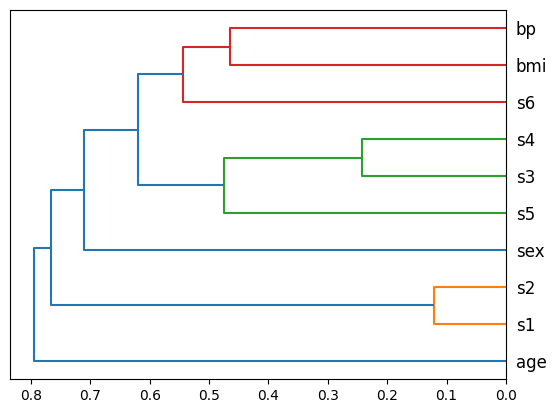
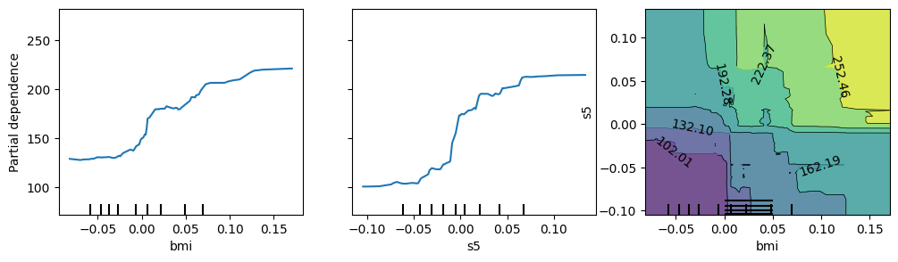
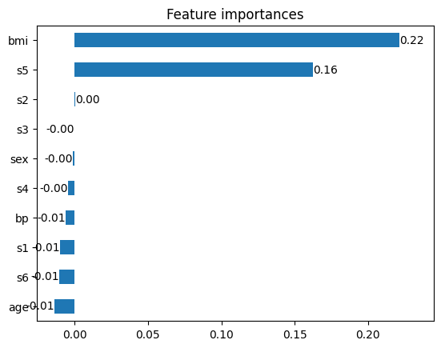
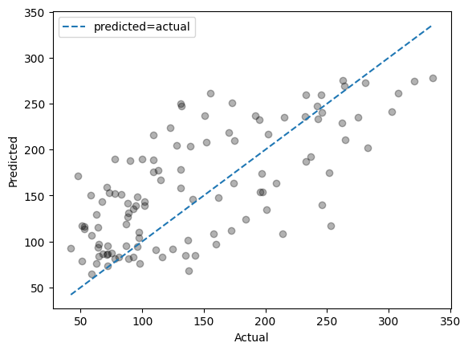
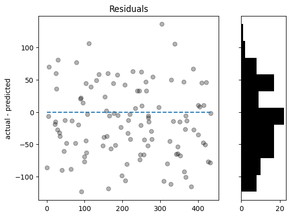

import sklearn.datasets
from sklearn.ensemble import RandomForestRegressor
from sklearn.model_selection import train_test_split
from model_inspector import get_inspectorModel Inspector
Inspect machine learning models
model_inspector aims to help you train better scikit-learn-compatible models by providing insights into their behavior.
Use
To use model_inspector, you create an Inspector object from a scikit-learn model, a feature DataFrame X, and a target Series y. Typically you will want to create it on held-out data, as shown below.
X, y = sklearn.datasets.load_diabetes(return_X_y=True, as_frame=True)X| age | sex | bmi | bp | s1 | s2 | s3 | s4 | s5 | s6 | |
|---|---|---|---|---|---|---|---|---|---|---|
| 0 | 0.038076 | 0.050680 | 0.061696 | 0.021872 | -0.044223 | -0.034821 | -0.043401 | -0.002592 | 0.019907 | -0.017646 |
| 1 | -0.001882 | -0.044642 | -0.051474 | -0.026328 | -0.008449 | -0.019163 | 0.074412 | -0.039493 | -0.068332 | -0.092204 |
| 2 | 0.085299 | 0.050680 | 0.044451 | -0.005670 | -0.045599 | -0.034194 | -0.032356 | -0.002592 | 0.002861 | -0.025930 |
| 3 | -0.089063 | -0.044642 | -0.011595 | -0.036656 | 0.012191 | 0.024991 | -0.036038 | 0.034309 | 0.022688 | -0.009362 |
| 4 | 0.005383 | -0.044642 | -0.036385 | 0.021872 | 0.003935 | 0.015596 | 0.008142 | -0.002592 | -0.031988 | -0.046641 |
| ... | ... | ... | ... | ... | ... | ... | ... | ... | ... | ... |
| 437 | 0.041708 | 0.050680 | 0.019662 | 0.059744 | -0.005697 | -0.002566 | -0.028674 | -0.002592 | 0.031193 | 0.007207 |
| 438 | -0.005515 | 0.050680 | -0.015906 | -0.067642 | 0.049341 | 0.079165 | -0.028674 | 0.034309 | -0.018114 | 0.044485 |
| 439 | 0.041708 | 0.050680 | -0.015906 | 0.017293 | -0.037344 | -0.013840 | -0.024993 | -0.011080 | -0.046883 | 0.015491 |
| 440 | -0.045472 | -0.044642 | 0.039062 | 0.001215 | 0.016318 | 0.015283 | -0.028674 | 0.026560 | 0.044529 | -0.025930 |
| 441 | -0.045472 | -0.044642 | -0.073030 | -0.081413 | 0.083740 | 0.027809 | 0.173816 | -0.039493 | -0.004222 | 0.003064 |
442 rows × 10 columns
y0 151.0
1 75.0
2 141.0
3 206.0
4 135.0
...
437 178.0
438 104.0
439 132.0
440 220.0
441 57.0
Name: target, Length: 442, dtype: float64X_train, X_test, y_train, y_test = train_test_split(X, y)rfr = RandomForestRegressor().fit(X_train, y_train)rfr.score(X_test, y_test)0.4145806969881506inspector = get_inspector(rfr, X_test, y_test)You can then use various methods of inspector to learn about how your model behaves on that data.
The methods that are available for a given inspector depends on the types of its estimator and its target y. An attribute called methods tells you what they are:
inspector.methods['plot_feature_clusters',
'plot_partial_dependence',
'permutation_importance',
'plot_permutation_importance',
'plot_pred_vs_act',
'plot_residuals',
'show_correlation']ax = inspector.plot_feature_clusters()
most_important_features = inspector.permutation_importance().index[:2]
axes = inspector.plot_partial_dependence(
features=[*most_important_features, most_important_features]
)
axes[0, 0].get_figure().set_size_inches(12, 3)
inspector.permutation_importance()bmi 0.241886
s5 0.153085
sex 0.003250
s3 0.000734
bp 0.000461
s4 -0.002687
s2 -0.004366
s1 -0.008953
s6 -0.018925
age -0.022768
dtype: float64ax = inspector.plot_permutation_importance()
ax = inspector.plot_pred_vs_act()
axes = inspector.plot_residuals()
inspector.show_correlation()| age | sex | bmi | bp | s1 | s2 | s3 | s4 | s5 | s6 | target | |
|---|---|---|---|---|---|---|---|---|---|---|---|
| age | 1.00 | 0.22 | 0.18 | 0.19 | 0.23 | 0.18 | -0.04 | 0.19 | 0.28 | 0.32 | 0.13 |
| sex | 0.22 | 1.00 | 0.29 | 0.31 | -0.05 | 0.08 | -0.41 | 0.30 | 0.13 | 0.27 | 0.27 |
| bmi | 0.18 | 0.29 | 1.00 | 0.55 | 0.16 | 0.18 | -0.43 | 0.45 | 0.43 | 0.49 | 0.66 |
| bp | 0.19 | 0.31 | 0.55 | 1.00 | 0.09 | 0.04 | -0.20 | 0.19 | 0.36 | 0.44 | 0.51 |
| s1 | 0.23 | -0.05 | 0.16 | 0.09 | 1.00 | 0.88 | 0.07 | 0.57 | 0.50 | 0.26 | 0.09 |
| s2 | 0.18 | 0.08 | 0.18 | 0.04 | 0.88 | 1.00 | -0.16 | 0.66 | 0.23 | 0.18 | 0.09 |
| s3 | -0.04 | -0.41 | -0.43 | -0.20 | 0.07 | -0.16 | 1.00 | -0.72 | -0.37 | -0.30 | -0.46 |
| s4 | 0.19 | 0.30 | 0.45 | 0.19 | 0.57 | 0.66 | -0.72 | 1.00 | 0.60 | 0.41 | 0.41 |
| s5 | 0.28 | 0.13 | 0.43 | 0.36 | 0.50 | 0.23 | -0.37 | 0.60 | 1.00 | 0.52 | 0.46 |
| s6 | 0.32 | 0.27 | 0.49 | 0.44 | 0.26 | 0.18 | -0.30 | 0.41 | 0.52 | 1.00 | 0.35 |
| target | 0.13 | 0.27 | 0.66 | 0.51 | 0.09 | 0.09 | -0.46 | 0.41 | 0.46 | 0.35 | 1.00 |
Scope
model_inspector makes some attempt to support estimators from popular libraries other than scikit-learn that mimic the scikit-learn interface. The following estimators are specifically supported:
- From
catboost:CatBoostClassifierCatBoostRegressor
- From
lightgbm:LGBMClassifierLGBMRegressor
- From
xgboost:XGBClassifierXGBRegressor
Install
pip install model_inspector
Alternatives
Yellowbrick
Yellowbrick is similar to Model Inspector in that it provides tools for visualizing the behavior of scikit-learn models.
The two libraries have different designs. Yellowbrick uses Visualizer objects, each class of which corresponds to a single type of visualization. The Visualizer interface is similar to the scikit-learn transformer and estimator interfaces. In constrast, model_inspector uses Inspector objects that bundle together a scikit-learn model, an X feature DataFrame, and a y target Series. The Inspector object does the work of identifying appropriate visualization types for the specific model and dataset in question and exposing corresponding methods, making it easy to visualize a given model for a given dataset in a variety of ways.
Another fundamental difference is that Yellowbrick is framed as a machine learning visualization library, while Model Inspector treats visualization as just one approach to inspecting the behavior of machine learning models.
SHAP
SHAP is another library that provides a set of tools for understanding the behavior of machine learning models. It has a somewhat similar design to Model Inspector in that it uses Explainer objects to provide access to methods that are appropriate for a given model. It has broader scope than Model Inspector in that it supports models from frameworks such as PyTorch and TensorFlow. It has narrower scope in that it only implements methods based on Shapley values.
Acknowledgments
Many aspects of this library were inspired by FastAI courses, including bundling together a model with data in a class and providing certain specific visualization methods such as feature importance bar plots, feature clusters dendrograms, tree diagrams, waterfall plots, and partial dependence plots. Its primary contribution is to make all of these methods available in a single convenient interface.